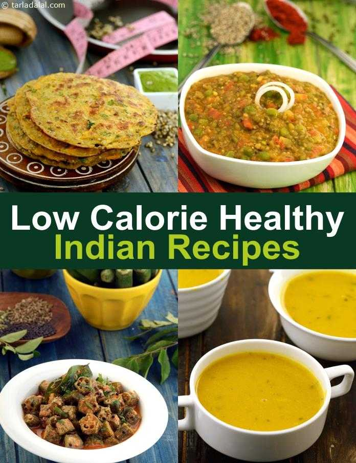

Many would agree that most difficult aspect of weight-loss is dealing with the misconceptions! How does one filter the good advice from the bad,
the partical suggestions from the impractical ones!

swimming headlong into the world of dieting without themselves with the right information, people often end up going overboard with their weight loss measures .
Bajra contains phytic acid, tannins and phenols, all potent antioxidants which help in preventing ageing and metabolic diseases like heart disease, stroke and cancer
Pearl millet, or bajra, is a gluten-free grain that was underrated till recently. Now that its health benefits have been acknowledged, however, it has become a much sought-after food. Here are some reasons you should add pearl millets to your diet:
High in fibre
Digestion is sluggish during the rainy season, so it helps to stick to high-fibre foods like bajra. It is loaded with insoluble fibre that provides bulk to the stool and keeps constipation, a common problem during this season, at bay.
Heart friendly
Bajra is rich in magnesium, which helps keep the heart healthy. It has potassium, which dilates blood vessels, allowing blood to flow more easily. This helps reduce overall blood pressure. Bajra also has fibre that helps reduce LDL, or bad, cholestrol. Magnesium helps control the glucose receptors in the body and keep diabetes at bay.
A detoxing agent
Bajra contains phytic acid, tannins and phenols, all antioxidants which help in preventing ageing and metabolic diseases like heart disease, stroke and cancer. It also contains catechins like quercetin that help keep the kidney and liver functioning properly by excreting the toxins from the body.
—Experts: Ruhi Dewan, head clinical nutritionist, Max Hospital, Gurugram; Vibha Bajpaiee, senior nutritionist, Asian Institute of Medical Sciences,
Faridabad.